Section 2 Point Cloud Processing
In this section we’ll process the raw point cloud data using cloud2trees developed to provide accessible routines for processing point cloud data collected by airborne lidar or generated using UAS imagery and photogrammetry (e.g. structure from motion).
The cloud2trees package can be installed by following the directions listed in the README file on GitHub. If one is still experiencing difficulties installing the package, see the example.R file which details how to install the package using a virgin R instance.
## remotes helps us get packages hosted on github
install.packages("remotes")
## get cloud2trees
remotes::install_github(repo = "georgewoolsey/cloud2trees", upgrade = F)Load the standard libraries we use to do work
# bread-and-butter
library(tidyverse) # the tidyverse
library(viridis) # viridis colors
library(harrypotter) # hp colors
library(RColorBrewer) # brewer colors
library(scales) # work with number and plot scales
library(latex2exp)
# visualization
library(mapview) # interactive html maps
library(kableExtra) # tables
library(patchwork) # combine plots
# spatial analysis
library(terra) # raster
library(sf) # simple features
library(lidR) # lidar data
library(cloud2trees) # the cloud2trees2.1 Data Location
Let’s check out the location of the data we got
# directory with the downloaded .las|.laz files
f <- "d:/BLM_CO_SWDF_DawsonFuelsTreatment/Final/PointCloud/Tiles"
# f <- "d:/BLM_CO_SWDF_DawsonFuelsTreatment/Final/PointCloud/Full/"
# is there data?
list.files(f, pattern = ".*\\.(laz|las)$") %>% length()## [1] 187## [1] "BLM_CO_SWDF_DawsonFuelsTreatment_PointCloud_202504-0-0.laz"
## [2] "BLM_CO_SWDF_DawsonFuelsTreatment_PointCloud_202504-0-1.laz"
## [3] "BLM_CO_SWDF_DawsonFuelsTreatment_PointCloud_202504-0-10.laz"what information does lidR read from the catalog?
## | |============================================================= | 88% | |============================================================== | 88% | |============================================================== | 89% | |=============================================================== | 89% | |=============================================================== | 90% | |================================================================ | 91% | |================================================================ | 92% | |================================================================= | 93% | |================================================================== | 94% | |================================================================== | 95% | |=================================================================== | 95% | |=================================================================== | 96% | |==================================================================== | 97% | |===================================================================== | 98% | |===================================================================== | 99% | |======================================================================| 99%## class : LAScatalog (v1.2 format 2)
## extent : -20768836, 22184836, -17283836, 25668836 (xmin, xmax, ymin, ymax)
## coord. ref. : NAD83(2011) / UTM zone 12N
## area : 57184906611 km²
## points : 5.24 billion points
## type : airborne
## density : 0 points/m²
## num. files : 187that’s a lot of points…can an ordinary laptop handle it? we’ll find out.
We’ll plot our point cloud data tiles real quick
ctg_temp@data %>%
dplyr::mutate(
nm =
basename(filename) %>%
stringr::str_remove("\\.[^.]+$") %>%
stringr::str_remove("BLM_CO_SWDF_DawsonFuelsTreatment_PointCloud_")
) %>%
ggplot2::ggplot() +
ggplot2::geom_sf(fill=NA, color = "red") +
ggplot2::theme_light()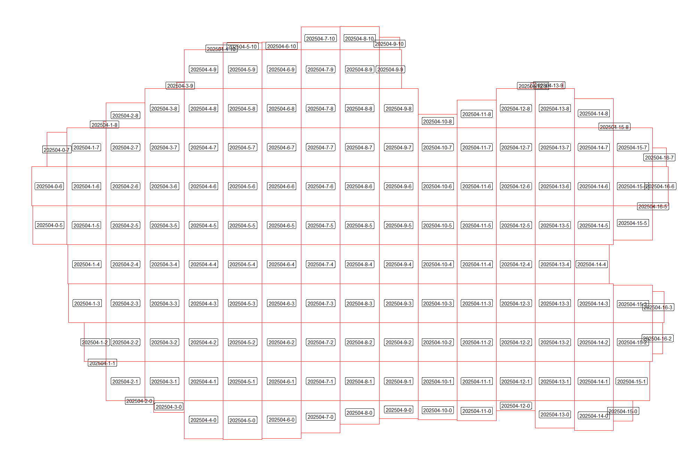
oh no. something weird is going on with the location of these point cloud tiles…perhaps that’s the reason for the “0 points/m2” message from lidR above
no worries, cloud2trees has built-in functionality to handle corrupt point cloud data. let’s see if that functionality can help clean this up
ctg_temp %>%
cloud2trees:::check_las_ctg_empty() %>%
purrr::pluck("data") %>%
dplyr::mutate(
nm =
basename(filename) %>%
stringr::str_remove("\\.[^.]+$") %>%
stringr::str_remove("BLM_CO_SWDF_DawsonFuelsTreatment_PointCloud_")
) %>%
ggplot2::ggplot() +
ggplot2::geom_sf(fill=NA, color = "red") +
ggplot2::geom_sf_label(mapping = ggplot2::aes(label = nm),size=2) +
ggplot2::theme_void()
that’s better. let’s look at this on a map to orient ourselves
2.2 Point Cloud to Raster: cloud2raster()
Although the cloud2trees::cloud2trees() function combines methods in the cloud2trees package for an all-in-one approach, we’ll instead use the cloud2trees::cloud2raster() function to generate a CHM from the point cloud that we can work with to perform both individual tree detection and slash pile identification (discussed later).
We’ll set the options in the function to generate a CHM which represents a DSM with the ground removed and no other filtering. This high resolution (i.e. fine-grain) CHM will serve as the foundation for tree detection and slash pile detection as we can manipulate it to optimize the processing for both methods.
# outdir
c2t_output_dir <- "../data"
c2t_process_dir <- file.path(c2t_output_dir, "point_cloud_processing_delivery")
c2t_tracking_fnm <- file.path(c2t_process_dir, "processed_tracking_data.csv")
##############################################################
# cloud2trees::cloud2raster
##############################################################
if(
!file.exists( file.path(c2t_process_dir, "chm_0.1m.tif") )
|| !file.exists( file.path(c2t_process_dir, "dtm_0.25m.tif") )
){
# time it
st_temp <- Sys.time()
# run it
# cloud2trees
cloud2raster_ans <- cloud2trees::cloud2raster(
output_dir = c2t_output_dir
, input_las_dir = f
, accuracy_level = 2
, keep_intrmdt = T
, dtm_res_m = 0.25
, chm_res_m = 0.1
, min_height = 0 # effectively generates a DSM based on non-ground points
)
# timer
mins_temp <- difftime(Sys.time(),st_temp,units = "mins") %>% as.numeric()
# save tracking
dplyr::tibble(
timer_cloud2raster_mins = mins_temp
) %>%
write.csv(
file = c2t_tracking_fnm
, row.names = F, append = F
)
}else{
dtm_temp <- terra::rast( file.path(c2t_process_dir, "dtm_0.25m.tif") )
chm_temp <- terra::rast( file.path(c2t_process_dir, "chm_0.1m.tif") )
cloud2raster_ans <- list(
"dtm_rast" = dtm_temp
, "chm_rast" = chm_temp
)
}let’s see what we got from cloud2trees::cloud2raster()
## [1] "dtm_rast" "chm_rast"there’s a DTM
# plot to check out the fine-resolution DTM raster
cloud2raster_ans$dtm_rast %>%
terra::plot(col = harrypotter::hp(n=100, option = "mischief"), main = "DTM (m)")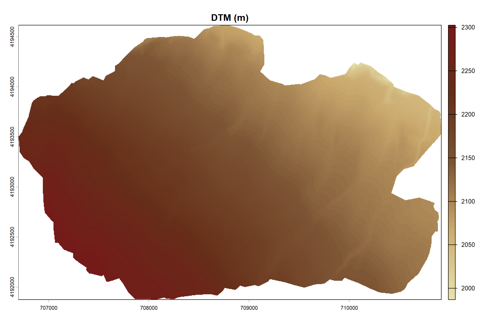
there’s a CHM
# plot to check out the fine-resolution CHM raster
cloud2raster_ans$chm_rast %>%
terra::plot(col = viridis::plasma(n=100), main = "CHM (m)")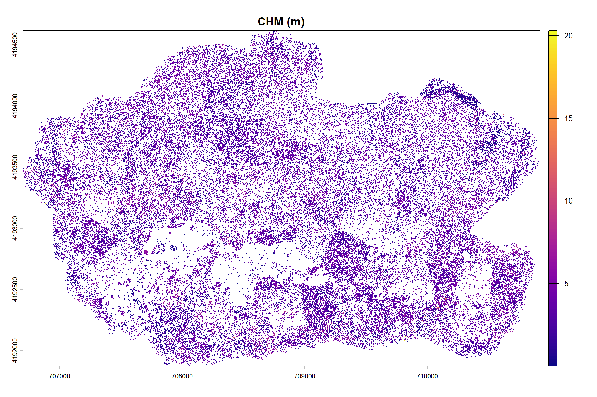
let’s see some details about the CHM
## class : SpatRaster
## size : 27426, 42203, 1 (nrow, ncol, nlyr)
## resolution : 0.1, 0.1 (x, y)
## extent : 706698.8, 710919.1, 4191874, 4194616 (xmin, xmax, ymin, ymax)
## coord. ref. : NAD83(2011) / UTM zone 12N (EPSG:6341)
## source : chm_0.1m.tif
## name : focal_mean
## min value : 0.00
## max value : 22.59## focal_mean
## Min. : 0.02
## 1st Qu.: 1.94
## Median : 3.36
## Mean : 3.30
## 3rd Qu.: 4.55
## Max. :20.31
## NA's :78839for tree detection, we’ll aggregate the CHM to a lower resolution (i.e. coarser) to smooth out some of the fine detail that can increase the noise in the tree detection processing. This aggregation process also will speed up the processing and reduce the chances of computational memory issues.
##################################################################
# aggregate to make raster more coarse for tree detection
##################################################################
# first, we'll borrow from the `cloud2trees` codebase to get a function to change the resolution of a raster exactly
###___________________________________________###
# adjust the resolution of a raster to be in exactly the target resolution
###___________________________________________###
if(
!file.exists( file.path(c2t_process_dir, "chm_0.25m.tif") )
){
agg_chm_rast <- cloud2trees:::adjust_raster_resolution(
cloud2raster_ans$chm_rast
, target_resolution = 0.25
, fun = max
, resample_method = "max"
, ofile = file.path(c2t_process_dir, "chm_0.25m.tif")
)
}else{
agg_chm_rast <- terra::rast( file.path(c2t_process_dir, "chm_0.25m.tif") )
}
# what chm?
agg_chm_rast## class : SpatRaster
## size : 424, 424, 1 (nrow, ncol, nlyr)
## resolution : 0.25, 0.25 (x, y)
## extent : 707786.1, 707892.1, 4193635, 4193741 (xmin, xmax, ymin, ymax)
## coord. ref. : NAD83(2011) / UTM zone 12N (EPSG:6341)
## source : chm_0.25m.tif
## name : focal_mean
## min value : 0.07
## max value : 7.73## focal_mean
## Min. :0.07
## 1st Qu.:2.52
## Median :3.46
## Mean :3.45
## 3rd Qu.:4.42
## Max. :7.73
## NA's :556422.3 Individial Tree Detection Tuning: itd_tuning()
The cloud2trees package performs individual tree detection using lidR::locate_trees() with the lidR::lmf() algorithm. The local maximum filter algorithm allows for a constant window size or a variable window size defined by a function. See the lidR package book section by point cloud processing expert Jean-Romain Roussel for excellent detail on ITD and defining window size.
The itd_tuning() function is used to visually assess tree crown delineation results from different window size functions used for the detection of individual trees. itd_tuning() allows users to test different window size functions on a sample of data to determine which function is most suitable for the area being analyzed. The preferred function can then be used in the ws parameter in raster2trees() and cloud2trees().
Let’s run itd_tuning() on our CHM data starting with default window size functions
###___________________________________________###
# itd_tuning
###___________________________________________###
# run it
set.seed(99)
itd_tuning_ans <- cloud2trees::itd_tuning(
input_chm_rast = agg_chm_rast
, min_height = 1.37
, n_samples = 2
)
# huh?
itd_tuning_ans %>% names()## [1] "plot_samples" "ws_fn_list" "plot_sample_summary"
## [4] "crowns"plot the detected trees on the CHM
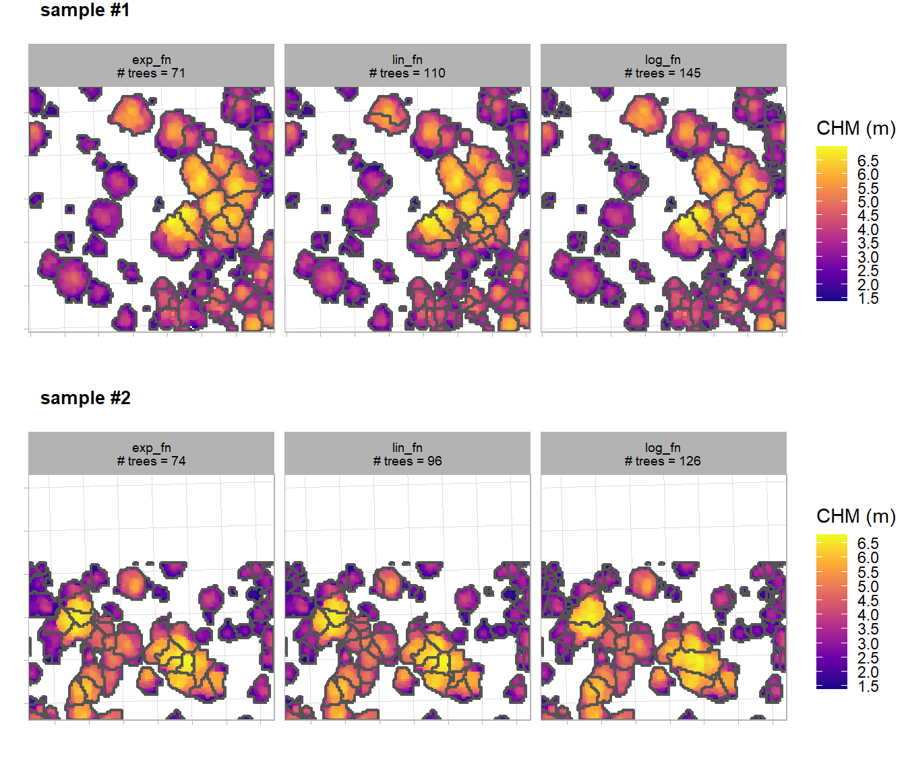
ggplot2::ggsave(
filename = file.path(c2t_process_dir, "itd_tuning_plot_samples.jpg")
, plot = itd_tuning_ans$plot_samples
, height = 7, width = 7
, dpi = "print"
)plot the summary of the detected trees
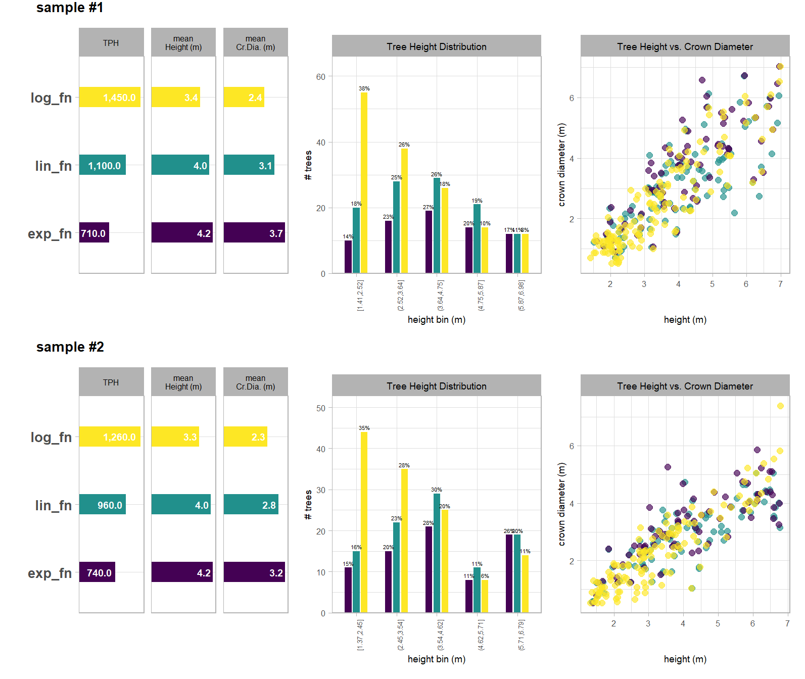
ggplot2::ggsave(
filename = file.path(c2t_process_dir, "itd_tuning_plot_sample_summary.jpg")
, plot = itd_tuning_ans$plot_sample_summary
, height = 7, width = 9.5
, dpi = "print"
) the exp_fn results in too few trees with crown diameters generally similar to the total tree height which is not expected
check the ws_fn_list return which includes the different window size functions tested
## List of 3
## $ lin_fn:function (x)
## $ exp_fn:function (x)
## $ log_fn:function (x)let’s look at the function definition for the linear function (lin_fn)
## function (x)
## {
## y <- dplyr::case_when(is.na(x) ~ 0.001, x < 0 ~ 0.001, x <
## 2 ~ 1, x > 30 ~ 5, TRUE ~ 0.75 + (x * 0.14))
## return(y)
## }
## <bytecode: 0x0000029b9d59d178>
## <environment: 0x0000029b9d59c320>let’s plot all of the functions we tested with our call to itd_tuning() using the defaults
# shape of the ws functions
plt_ws_fn <- ggplot2::ggplot() +
ggplot2::geom_function(mapping=ggplot2::aes(color = "lin_fn"),fun=itd_tuning_ans$ws_fn_list$lin_fn, lwd=1.2) +
ggplot2::geom_function(mapping=ggplot2::aes(color = "log_fn"),fun=itd_tuning_ans$ws_fn_list$log_fn, lwd=1.2) +
ggplot2::geom_function(mapping=ggplot2::aes(color = "exp_fn"),fun=itd_tuning_ans$ws_fn_list$exp_fn, lwd=1.2) +
ggplot2::xlim(-5,35) +
ggplot2::scale_color_manual( values = c(viridis::viridis(3), "gray") ) +
ggplot2::labs(x = "heights", y = "ws", color = "ws function") +
ggplot2::theme_light()
plt_ws_fn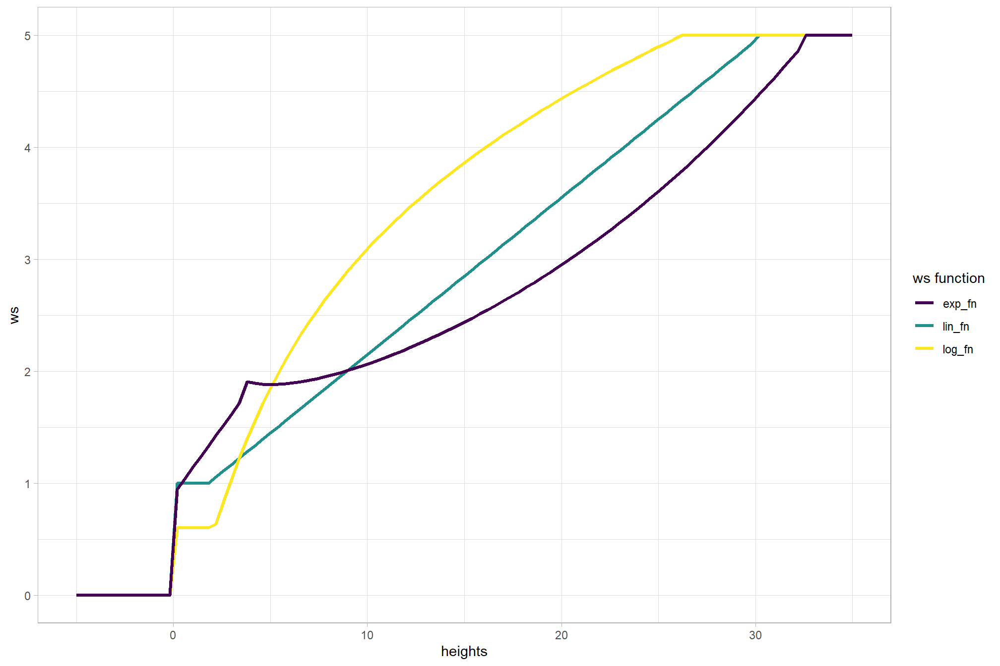
Let’s define our own custom linear function that slightly decreases the window size for the shortest trees but increases the window for taller trees compared to the default linear function.
my_lin_fn <- function (x) {
y <- dplyr::case_when(
is.na(x) ~ 0.001
, x < 0 ~ 0.001
, x > (5.3-0.51)/0.21 ~ 5.3
, TRUE ~ 0.51 + (x * 0.21)
)
return(y)
}add to the plot
# plt
plt_ws_fn +
ggplot2::geom_function(
fun = my_lin_fn
, mapping = ggplot2::aes(color = "my_lin_fn")
, lwd = 2
)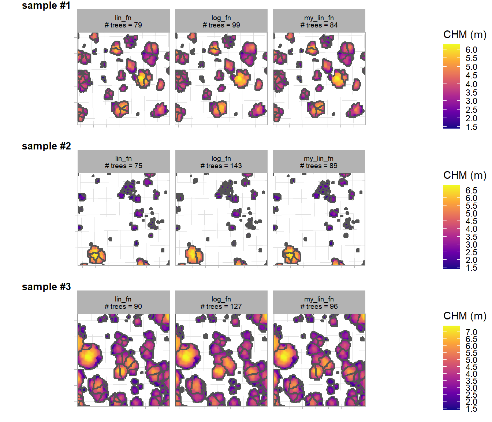
We’ll run another sample test using itd_tuning()with our new function
itd_tuning_ans2 <- cloud2trees::itd_tuning(
input_chm_rast = agg_chm_rast
, min_height = 1.37
, ws_fn_list = list(
lin_fn = itd_tuning_ans$ws_fn_list$lin_fn
, log_fn = itd_tuning_ans$ws_fn_list$log_fn
, my_lin_fn = my_lin_fn
)
)plot the detected trees on the CHM
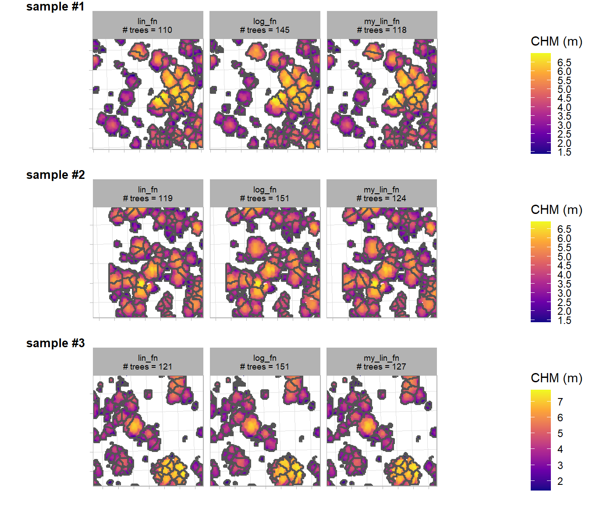
ggplot2::ggsave(
filename = file.path(c2t_process_dir, "itd_tuning_plot_samples2.jpg")
, plot = itd_tuning_ans2$plot_samples
, height = 7, width = 7
, dpi = "print"
)plot the summary of the detected trees
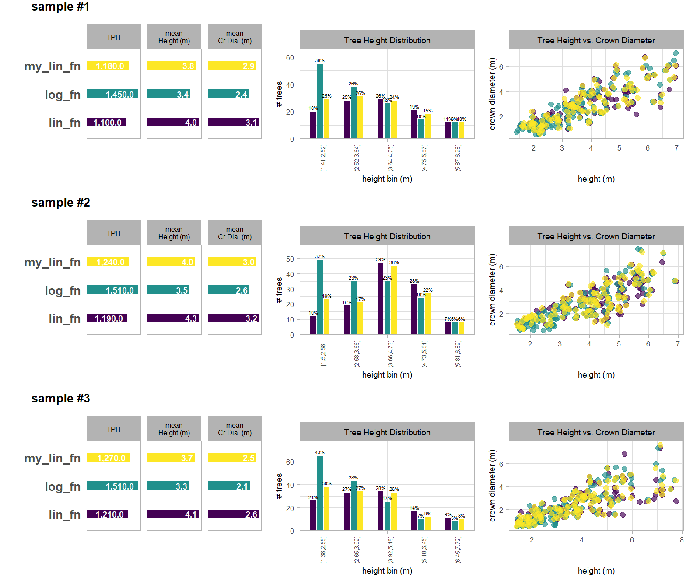
ggplot2::ggsave(
filename = file.path(c2t_process_dir, "itd_tuning_plot_sample_summary2.jpg")
, plot = itd_tuning_ans2$plot_sample_summary
, height = 7, width = 9.5
, dpi = "print"
)notice, there is also a tree crown data frame in the return
## Rows: 1,166
## Columns: 9
## $ sample_number <int> 1, 1, 1, 1, 1, 1, 1, 1, 1, 1, 1, 1, 1, 1, 1, 1, 1, 1,…
## $ ws_fn <chr> "lin_fn", "lin_fn", "lin_fn", "lin_fn", "lin_fn", "li…
## $ treeID <chr> "1_707831.2_4193703.9", "2_707852.2_4193703.9", "3_70…
## $ tree_height_m <dbl> 3.30, 3.87, 4.04, 3.21, 1.82, 4.34, 3.20, 4.76, 2.46,…
## $ tree_x <dbl> 707831.2, 707852.2, 707850.2, 707823.5, 707839.2, 707…
## $ tree_y <dbl> 4193704, 4193704, 4193704, 4193702, 4193702, 4193702,…
## $ crown_area_m2 <dbl> 3.2500, 1.6250, 3.6875, 3.3750, 0.5000, 2.6875, 2.187…
## $ geometry <GEOMETRY [m]> POLYGON ((707829.8 4193704,..., POLYGON ((70…
## $ crown_diameter_m <dbl> 2.9261750, 2.3048861, 3.7165172, 2.8284271, 1.0606602…# count trees by sample
itd_tuning_ans2$crowns %>% sf::st_drop_geometry() %>% dplyr::count(sample_number, ws_fn)## # A tibble: 9 × 3
## sample_number ws_fn n
## <int> <chr> <int>
## 1 1 lin_fn 110
## 2 1 log_fn 145
## 3 1 my_lin_fn 118
## 4 2 lin_fn 119
## 5 2 log_fn 151
## 6 2 my_lin_fn 124
## 7 3 lin_fn 121
## 8 3 log_fn 151
## 9 3 my_lin_fn 127with the crowns data we can explore alternative visualizations including overlaying the detected trees on the RGB data if available
read RGB
#### read RGB data keep only RGB
rgb_rast_fnm <- "d:/BLM_CO_SWDF_DawsonFuelsTreatment/Final/Ortho/BLM_CO_SWDF_DawsonFuelsTreatment_Ortho_202504.tif"plot it
# make a function to plot these detected crowns with rgb data
plt_rgb_rast_itd_crowns <- function(sample_nmbr = 1, rgb_rast, itd_crowns, plt_lwd = 0.7) {
# crop
crp_rgb_rast_temp <- rgb_rast %>%
terra::crop(
itd_crowns %>%
dplyr::ungroup() %>%
dplyr::filter(sample_number == sample_nmbr) %>%
sf::st_union() %>%
sf::st_bbox() %>%
sf::st_as_sfc() %>%
sf::st_buffer(0.2) %>%
sf::st_transform(terra::crs(rgb_rast)) %>%
terra::vect()
)
# convert raster to a data frame and create hex colors
# ?grDevices::rgb
rgb_df_temp <-
crp_rgb_rast_temp %>%
terra::as.data.frame(xy = TRUE) %>%
dplyr::rename(
red = 3, green = 4, blue = 5
) %>%
dplyr::mutate(
hex_col = grDevices::rgb(
red
, green
, blue
, maxColorValue = 255
)
)
# dplyr::glimpse()
# plt
plt <- ggplot2::ggplot() +
# add rgb base map
ggplot2::geom_raster(data = rgb_df_temp, mapping = ggplot2::aes(x = x, y = y, fill = hex_col)) +
# use identity scale so the hex codes are used directly
ggplot2::scale_fill_identity() +
# overlay polygons
# ggplot2::geom_sf(data = polys, fill = NA, color = "red", linewidth = 0.5) +
ggplot2::geom_sf(
data = itd_crowns %>%
dplyr::filter(sample_number==sample_nmbr) %>%
cloud2trees::simplify_multipolygon_crowns() %>%
sf::st_make_valid() %>%
dplyr::filter(sf::st_is_valid(.)) %>%
sf::st_transform(terra::crs(crp_rgb_rast_temp))
, mapping = ggplot2::aes(color = ws_fn)
, fill = NA
, lwd = plt_lwd
, inherit.aes = F
) +
ggplot2::facet_grid(cols = dplyr::vars(ws_fn)) +
ggplot2::scale_color_viridis_d(name = "") +
ggplot2::coord_sf(expand = F) +
ggplot2::theme_void() +
ggplot2::theme(
legend.position = "none"
, strip.text = ggplot2::element_text(face = "bold", color = "black", margin = ggplot2::margin(t = 4, b = 4))
, strip.background = ggplot2::element_rect(fill = "gray88", color = "gray88")
, panel.spacing = ggplot2::unit(1,"lines")
)
return(plt)
}plot the trees detected in sample one on the RGB
plt_rgb_rast_itd_crowns(sample_nmbr = 1, rgb_rast = pj_rgb_rast, itd_crowns = itd_tuning_ans2$crowns)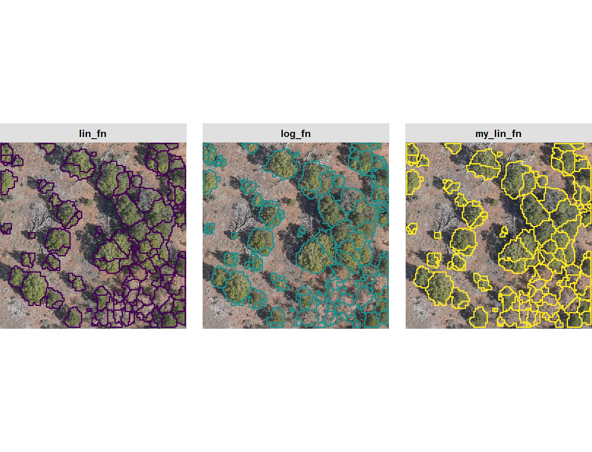
this is only moderately helpful as the tree density in tree clumps is difficult to infer from the 2D aerial imagery alone. let’s move forward with the default linear function in the raster2trees() function
2.4 Tree Extraction: raster2trees()
Now, perform individual tree detection using raster2trees() on the aggregated CHM
##############################################################
# cloud2trees::raster2trees
##############################################################
search_temp <- cloud2trees:::search_dir_final_detected(dir = c2t_process_dir)
if(
is.null(search_temp$crowns_flist)
|| is.null(search_temp$ttops_flist)
){
# time it
st_temp <- Sys.time()
# run it
# cloud2trees
raster2trees_ans <- cloud2trees::raster2trees(
chm_rast = agg_chm_rast
, outfolder = c2t_process_dir
, ws = my_ws_fn
, min_height = 1.37
, min_crown_area = 0.5
)
# raster2trees_ans
# timer
mins_temp <- difftime(Sys.time(),st_temp,units = "mins") %>% as.numeric()
# save tracking
readr::read_csv(c2t_tracking_fnm, progress = F, show_col_types = F) %>%
dplyr::mutate(
timer_raster2trees_mins = mins_temp
) %>%
write.csv(
file = c2t_tracking_fnm
, row.names = F, append = F
)
}else{
search_dir_final_detected_ans_temp <- cloud2trees:::search_dir_final_detected(dir = c2t_process_dir)
crowns_flist_temp <- search_dir_final_detected_ans_temp$crowns_flist
# read it to get the full list of tree polygons
raster2trees_ans <- crowns_flist_temp %>%
purrr::map(function(x){
sf::st_read(
dsn = x
, quiet = T
) %>%
# throw in hey_xxxxxxxxxx to test it works if we include non-existant columns
dplyr::select( -dplyr::any_of(c(
"hey_xxxxxxxxxx"
, "tree_cbh_m"
, "is_training_cbh"
)))
}) %>%
dplyr::bind_rows()
}we should have a spatial tree list with tree height and crown dimensions attached
## Rows: 625,378
## Columns: 6
## $ treeID <chr> "270511_706700.2_4193508", "273702_706701.7_4193500", "2…
## $ tree_height_m <dbl> 1.88, 4.37, 2.00, 6.13, 3.21, 4.08, 4.67, 5.79, 2.49, 4.…
## $ tree_x <dbl> 706700.2, 706701.7, 706702.2, 706702.4, 706703.2, 706703…
## $ tree_y <dbl> 4193508, 4193500, 4193498, 4193502, 4193468, 4193469, 41…
## $ crown_area_m2 <dbl> 0.5000, 4.6250, 1.1250, 5.7500, 1.5625, 2.8750, 2.3125, …
## $ geom <MULTIPOLYGON [m]> MULTIPOLYGON (((706700.1 41..., MULTIPOLYGO…That’s a lot of trees! Let’s plot some on the RGB imagery for the central part of the data. This time, we’ll use terra plotting to demonstrate
aoi_temp <-
raster2trees_ans %>%
dplyr::slice_sample(prop=0.1) %>%
sf::st_point_on_surface() %>%
sf::st_union() %>%
sf::st_bbox() %>%
sf::st_as_sfc() %>%
sf::st_centroid() %>%
sf::st_buffer(22, endCapStyle = "SQUARE")
# rgb
pj_rgb_rast %>%
terra::crop(
aoi_temp %>%
sf::st_transform(terra::crs(pj_rgb_rast)) %>%
terra::vect()
) %>%
terra::plotRGB(stretch = "lin", axes = F)
# trees
terra::plot(
raster2trees_ans %>%
dplyr::inner_join(
raster2trees_ans %>%
sf::st_intersection(
aoi_temp %>% sf::st_buffer(-2)
) %>%
sf::st_drop_geometry() %>%
dplyr::select(treeID)
, by = "treeID"
) %>%
dplyr::ungroup() %>%
cloud2trees::simplify_multipolygon_crowns() %>%
sf::st_transform(terra::crs(pj_rgb_rast)) %>%
terra::vect()
, add = T
, border = "brown", col = NA, lwd = 1.2
)That looks like we did a decent job extracting trees. Remember we set a minimum tree height of 1.37 m (DBH) and we may want to filter out small trees as the analysis proceeds. Let’s look at the distribution of tree height in our study area.
# there are always tree heights
raster2trees_ans %>%
ggplot2::ggplot(mapping = ggplot2::aes(x = tree_height_m)) +
ggplot2::geom_density(fill = "navy", color = "navy", alpha = 0.2) +
ggplot2::scale_x_continuous(breaks = scales::breaks_extended(11)) +
ggplot2::labs(x = "tree ht. (m)", y = "") +
ggplot2::theme_light() +
ggplot2::theme(axis.text.y = ggplot2::element_blank(), axis.ticks.y = ggplot2::element_blank())
let’s look at the summary statistics of tree height
## Min. 1st Qu. Median Mean 3rd Qu. Max.
## 1.370 2.930 4.120 4.147 5.180 22.590Notice above we tracked the time it took to process the data. let’s see how long those cloud2trees processing steps took to run. Run times are, of course, dependent on computer processing and I am working on a laptop typical of a spatial analyst (especially outside of the US Federal Government) running Windows with an Intel i7-10750H 6-core computer processor unit and 32 gigabytes of random-access memory.
# load processing extent
raw_las_ctg_info <- file.path(c2t_process_dir,"raw_las_ctg_info.gpkg") %>%
sf::st_read(quiet = T) %>%
dplyr::mutate(area_m2 = sf::st_area(.) %>% as.numeric())
# load processed_tracking_data.csv
processing_data <- readr::read_csv(
file = c2t_tracking_fnm
, progress = F
, show_col_types = F
)
# what?
processing_data %>%
dplyr::select(timer_cloud2raster_mins, timer_raster2trees_mins) %>%
dplyr::glimpse()## Rows: 1
## Columns: 2
## $ timer_cloud2raster_mins <dbl> 327.3623
## $ timer_raster2trees_mins <dbl> 13.21568let’s do some math
# total tree extraction time
trees_mins_temp <- processing_data$timer_cloud2raster_mins[1] +
processing_data$timer_raster2trees_mins[1]
# ha
m2_temp <- raw_las_ctg_info %>%
sf::st_drop_geometry() %>%
dplyr::summarise(
m2 = sum(area_m2)
) %>%
dplyr::pull(m2)
# pts
pts_temp <- raw_las_ctg_info %>%
sf::st_drop_geometry() %>%
dplyr::summarise(
pts = sum(Number.of.point.records)
) %>%
dplyr::pull(pts)
# secs per ha
rate_temp <- (trees_mins_temp*60) / (m2_temp/10000)
# point density
dens_temp <- pts_temp / m2_temp
# save tracking
readr::read_csv(c2t_tracking_fnm, progress = F, show_col_types = F) %>%
dplyr::mutate(
number_of_points = pts_temp
, las_area_m2 = m2_temp
) %>%
write.csv(
file = c2t_tracking_fnm
, row.names = F, append = F
)Tree extraction over 887.6 hectares took a total of 340.6 minutes at processing rate of 23.02 seconds per hectare on point cloud data with a point density of 590.8 points per square meter (5,244,072,960 points total).
2.5 CBH Modeling: trees_cbh()
The trees_cbh() function uses the tree crown polygons we delineated from the point cloud with the columns treeID and tree_height_m to attempt to extract crown base height (CBH) directly from the height normalized point cloud using the process outlined in Viedma et al. (2024).
We’ll attempt to extract CBH for a sample and model the rest based on the data we successfully extracted from the point cloud.
cbh_fnm <- file.path(c2t_process_dir, "cbh_data.csv")
# if we don't already have the data, run it
if(!file.exists( cbh_fnm )){
# sample proportion
sample_prop_temp <- 0.10
# time it
st_temp <- Sys.time()
# run it
trees_cbh_ans <- cloud2trees::trees_cbh(
trees_poly = c2t_process_dir
, norm_las = file.path(c2t_output_dir, "point_cloud_processing_temp", "02_normalize")
, tree_sample_prop = sample_prop_temp
, which_cbh = "lowest"
, estimate_missing_cbh = TRUE
, min_vhp_n = 3
, voxel_grain_size_m = 1
, dist_btwn_bins_m = 1
, min_fuel_layer_ht_m = 0.5
, lad_pct_gap = 25
, lad_pct_base = 25
, num_jump_steps = 1
, min_lad_pct = 10
, frst_layer_min_ht_m = 0.5
, force_same_crs = T
)
# timer
mins_temp <- difftime(Sys.time(),st_temp,units = "mins") %>% as.numeric()
# save cbh
trees_cbh_ans %>% sf::st_drop_geometry() %>%
write.csv(file = cbh_fnm, row.names = F, append = F)
# save tracking
readr::read_csv(c2t_tracking_fnm, progress = F, show_col_types = F) %>%
dplyr::mutate(
timer_trees_cbh_mins = mins_temp
, sttng_cbh_tree_sample_n = as.character(NA)
, sttng_cbh_tree_sample_prop = sample_prop_temp
) %>%
write.csv(
file = c2t_tracking_fnm
, row.names = F, append = F
)
}else{
# cbh data
trees_cbh_ans <- readr::read_csv( cbh_fnm, progress = F, show_col_types = F)
}CBH extraction took a total of 319.6 minutes (5.3 hours)
We attempted to extract CBH from 10% of our tree list (62,538 trees), let’s see our success rate
## # A tibble: 2 × 3
## is_training_cbh n pct
## <lgl> <int> <dbl>
## 1 FALSE 588400 0.941
## 2 TRUE 36978 0.0591That equates to a 59.1% CBH extraction success rate….not a great success ;(
all of the records marked as training data had CBH successfully extracted from the point cloud and were used to estimate a height-CBH allometry relationship that is spatially informed using the relative tree location
let’s look at the training versus the modeled CBH versus height
trees_cbh_ans %>%
dplyr::slice_sample(n = 11111) %>%
dplyr::arrange(is_training_cbh) %>%
ggplot2::ggplot(mapping = ggplot2::aes(x = tree_height_m, y = tree_cbh_m, color=is_training_cbh)) +
ggplot2::geom_point() +
ggplot2::labs(x = "tree ht. (m)", y = "tree CBH (m)") +
ggplot2::scale_y_continuous(breaks = scales::extended_breaks(n=12)) +
ggplot2::scale_x_continuous(breaks = scales::extended_breaks(n=14)) +
ggplot2::scale_color_viridis_d(alpha = 0.7, name = "is CBH\nfrom cloud?") +
ggplot2::theme_light()
Let’s look at the distribution of CBH in our study area
trees_cbh_ans %>%
ggplot2::ggplot(mapping = ggplot2::aes(x = tree_cbh_m)) +
ggplot2::geom_density(fill = "maroon4", color = "maroon4", alpha = 0.2) +
ggplot2::scale_x_continuous(breaks = scales::breaks_extended(11)) +
ggplot2::labs(x = "tree CBH (m)", y = "") +
ggplot2::theme_light() +
ggplot2::theme(axis.text.y = ggplot2::element_blank(), axis.ticks.y = ggplot2::element_blank())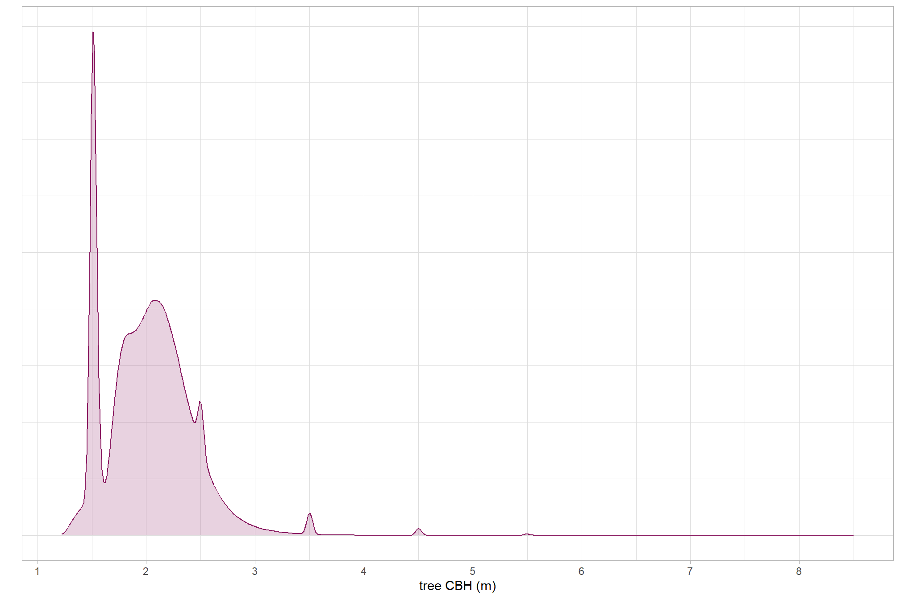
and look at the summary statistics of CBH
## Min. 1st Qu. Median Mean 3rd Qu. Max.
## 1.223 1.729 2.009 2.023 2.261 8.500we can also look at the spatial distribution of the trees for which CBH was successfully extracted
# convert to pts real quick
treetops_sf <-
raster2trees_ans %>%
sf::st_drop_geometry() %>%
sf::st_as_sf(coords = c("tree_x", "tree_y"), crs = sf::st_crs(raster2trees_ans), remove = F) %>%
# add on cbh
dplyr::left_join(
trees_cbh_ans %>%
dplyr::select(treeID, is_training_cbh, tree_cbh_m)
, by = "treeID"
)
# plot
treetops_sf %>%
dplyr::slice_sample(n = 11111, by = is_training_cbh) %>%
ggplot2::ggplot() +
ggplot2::geom_sf(mapping = ggplot2::aes(color = is_training_cbh)) +
ggplot2::scale_color_viridis_d(alpha = 0.7, name = "is CBH\nfrom cloud?") +
ggplot2::theme_void()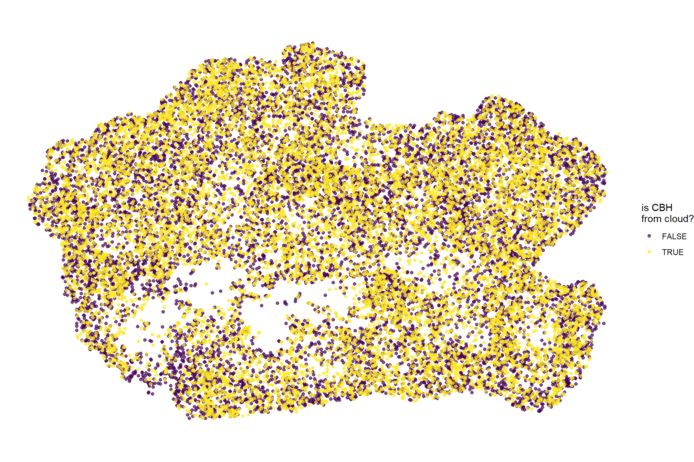
that is good spatial distribution of the training data
2.6 DBH Modeling: trees_dbh()
The trees_dbh() function uses the TreeMap FIA plot data in the area of the tree list to estimate the height-DBH allometry relationship. The height predicting DBH model built from the FIA data is then used to predict DBH based on tree height in the tree list.
dbh_fnm <- file.path(c2t_process_dir, "dbh_data.csv")
# if we don't already have the data, run it
if(!file.exists( dbh_fnm )){
# time it
st_temp <- Sys.time()
# run it
trees_dbh_ans <- cloud2trees::trees_dbh(
tree_list = treetops_sf
, boundary_buffer = 2
, outfolder = c2t_process_dir
)
# timer
mins_temp <- difftime(Sys.time(),st_temp,units = "mins") %>% as.numeric()
# save dbh
trees_dbh_ans %>% sf::st_drop_geometry() %>%
write.csv(file = dbh_fnm, row.names = F, append = F)
# save tracking
readr::read_csv(c2t_tracking_fnm, progress = F, show_col_types = F) %>%
dplyr::mutate(
timer_trees_dbh_mins = mins_temp
) %>%
write.csv(
file = c2t_tracking_fnm
, row.names = F, append = F
)
}else{
# dbh data
trees_dbh_ans <- readr::read_csv( dbh_fnm, progress = F, show_col_types = F)
}Estimating DBH for our tree list of 625,378 trees took 7.9 minutes
let’s check the relationship between height and DBH as estimated by the regional allometric relationship
trees_dbh_ans %>%
dplyr::slice_sample(n=7777) %>%
ggplot2::ggplot(mapping = ggplot2::aes(x = tree_height_m, y = dbh_cm)) +
ggplot2::geom_point(color = "navy", alpha = 0.6) +
ggplot2::labs(x = "tree ht. (m)", y = "tree DBH (cm)") +
ggplot2::scale_x_continuous(limits = c(0,NA)) +
ggplot2::scale_y_continuous(limits = c(0,NA)) +
ggplot2::theme_light()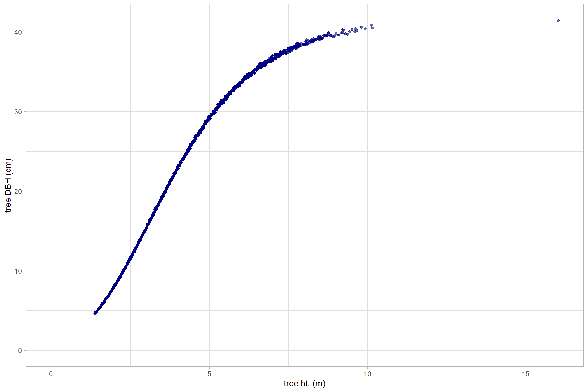
Let’s look at the distribution of tree diameter in our study area
trees_dbh_ans %>%
ggplot2::ggplot(mapping = ggplot2::aes(x = dbh_cm)) +
ggplot2::geom_density(fill = "brown", color = "brown", alpha = 0.2) +
ggplot2::scale_x_continuous(breaks = scales::breaks_extended(11)) +
ggplot2::labs(x = "tree DBH (cm)", y = "") +
ggplot2::theme_light() +
ggplot2::theme(axis.text.y = ggplot2::element_blank(), axis.ticks.y = ggplot2::element_blank())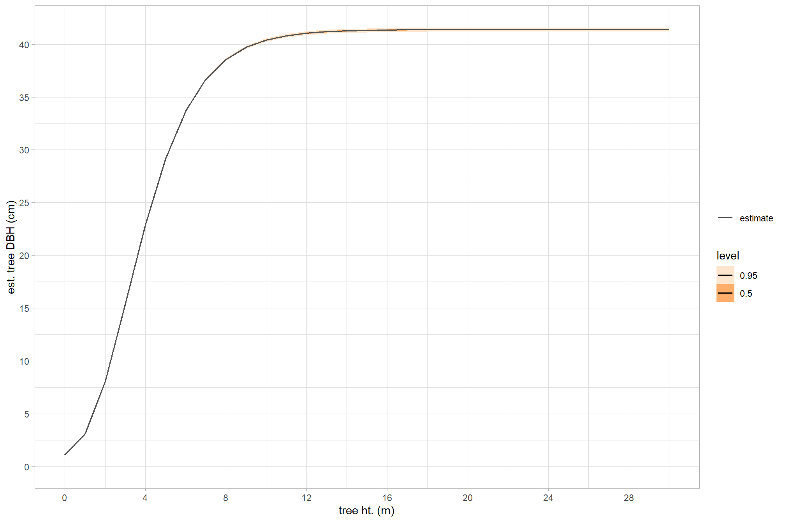
let’s look at the summary statistics
## Min. 1st Qu. Median Mean 3rd Qu. Max.
## 4.584 14.756 23.626 22.551 30.043 41.932cloud2trees::trees_dbh() saved the actual model estimated using the Bayesian modelling package brms which we can load and review
dbh_mod_temp <- readRDS( file.path(c2t_process_dir, "regional_dbh_height_model.rds") )
# what is this?
dbh_mod_temp %>% class()## [1] "brmsfit"## Family: lognormal
## Links: mu = identity
## Formula: dbh_cm | weights(tree_weight) ~ asym * (1 - exp(-k * tree_height_m))^p
## asym ~ 1
## k ~ 1
## p ~ 1
## Data: treemap_trees_df (Number of observations: 2386)
## Draws: 4 chains, each with iter = 6000; warmup = 3000; thin = 1;
## total post-warmup draws = 12000
##
## Regression Coefficients:
## Estimate Est.Error l-95% CI u-95% CI Rhat Bulk_ESS Tail_ESS
## asym_Intercept 3.63 0.00 3.62 3.63 1.00 3015 4147
## k_Intercept 0.54 0.00 0.53 0.54 1.00 2233 2941
## p_Intercept 1.44 0.01 1.42 1.45 1.00 2275 3064
##
## Further Distributional Parameters:
## Estimate Est.Error l-95% CI u-95% CI Rhat Bulk_ESS Tail_ESS
## sigma 0.44 0.00 0.44 0.44 1.00 5531 5420
##
## Draws were sampled using sampling(NUTS). For each parameter, Bulk_ESS
## and Tail_ESS are effective sample size measures, and Rhat is the potential
## scale reduction factor on split chains (at convergence, Rhat = 1).we can draw fit curves with probability bands using the tidybayes package
library(tidybayes)
# define our height range to predict over
dplyr::tibble(tree_height_m = seq(from = 0, to = 30, by = 1)) %>%
tidybayes::add_epred_draws(dbh_mod_temp, ndraws = 2000) %>%
ggplot2::ggplot(ggplot2::aes(x = tree_height_m)) +
tidybayes::stat_lineribbon(
ggplot2::aes(y = .epred, color = "estimate")
, .width = c(0.5,0.95)
, lwd = 0.6
) +
ggplot2::scale_fill_brewer(palette = "Oranges") +
ggplot2::scale_color_manual(values = c("gray33")) +
ggplot2::labs(x = "tree ht. (m)", y = "est. tree DBH (cm)", color = "") +
ggplot2::scale_x_continuous(limits = c(0,NA), breaks = scales::extended_breaks(n=11)) +
ggplot2::scale_y_continuous(limits = c(0,NA), breaks = scales::extended_breaks(n=11)) +
ggplot2::theme_light()
The probability bands are there in shades of orange but they are so tight to the median estimate that it’s difficult to see them. The model confidence bands are so narrow because the model was trained with lots of FIA measured trees over the broad study area
we can check how many FIA measured trees were used to train our model because cloud2trees::trees_dbh() also writes the training data to the disk (that’s neat, but we don’t always need to see how the sausage is made)
readr::read_csv(
file.path(c2t_process_dir, "regional_dbh_height_model_training_data.csv")
, progress = F
, show_col_types = F
) %>%
dplyr::summarise(training_trees = sum(tree_weight)) %>%
dplyr::pull(training_trees) %>%
scales::comma(accuracy = 1)## [1] "331,111"that’s how many FIA measured trees were used to train our model
2.7 HMD Modeling: trees_hmd()
The trees_hmd() function uses the tree crown polygons we delineated from the point cloud with the columns treeID and tree_height_m to attempt to extract height to maximum crown diameter (HMD) directly from the height normalized point cloud by finding the height of the non-ground point farthest from the tree center (i.e. tree top). HMD refers to the vertical height at which a tree’s crown has its widest horizontal spread. It describes a characteristic of the overall crown shape and structure.
hmd_fnm <- file.path(c2t_process_dir, "hmd_data.csv")
# if we don't already have the data, run it
if(!file.exists( hmd_fnm )){
# sample proportion
sample_prop_temp <- (1/3)
# time it
st_temp <- Sys.time()
# run it
trees_hmd_ans <- cloud2trees::trees_hmd(
trees_poly = c2t_process_dir
, norm_las = file.path(c2t_output_dir, "point_cloud_processing_temp", "02_normalize")
, tree_sample_prop = sample_prop_temp
, force_same_crs = T
, estimate_missing_hmd = T
)
# timer
mins_temp <- difftime(Sys.time(),st_temp,units = "mins") %>% as.numeric()
# save hmd
trees_hmd_ans %>% sf::st_drop_geometry() %>%
write.csv(file = hmd_fnm, row.names = F, append = F)
# save tracking
readr::read_csv(c2t_tracking_fnm, progress = F, show_col_types = F) %>%
dplyr::mutate(
timer_trees_hmd_mins = mins_temp
, sttng_hmd_tree_sample_n = as.character(NA)
, sttng_hmd_tree_sample_prop = sample_prop_temp
) %>%
write.csv(
file = c2t_tracking_fnm
, row.names = F, append = F
)
}else{
# hmd data
trees_hmd_ans <- readr::read_csv( hmd_fnm, progress = F, show_col_types = F)
}HMD extraction took a total of 203.5 minutes at processing rate of 19.53 seconds per 1,000 trees
We attempted to extract HMD from 33% of our tree list, let’s see our success rate
trees_hmd_ans %>%
sf::st_drop_geometry() %>%
dplyr::count(is_training_hmd) %>%
dplyr::mutate(pct = n/sum(n))## # A tibble: 2 × 3
## is_training_hmd n pct
## <lgl> <int> <dbl>
## 1 FALSE 447306 0.715
## 2 TRUE 178072 0.285all of the records marked as “training data” had HMD successfully extracted from the point cloud and were used to estimate a height-HMD allometry relationship that is spatially informed using the relative tree location
let’s look at the training versus the modeled HMD versus height
trees_hmd_ans %>%
dplyr::slice_sample(n = 11111) %>%
dplyr::arrange(desc(is_training_hmd)) %>%
ggplot2::ggplot(mapping = ggplot2::aes(x = tree_height_m, y = max_crown_diam_height_m, color=is_training_hmd)) +
ggplot2::geom_point() +
ggplot2::labs(x = "tree ht. (m)", y = "tree HMD (m)") +
ggplot2::scale_y_continuous(breaks = scales::extended_breaks(n=12)) +
ggplot2::scale_x_continuous(breaks = scales::extended_breaks(n=14)) +
ggplot2::scale_color_viridis_d(option = "magma", begin = 0.2, alpha = 0.7, name = "is HMD\nfrom cloud?") +
ggplot2::theme_light()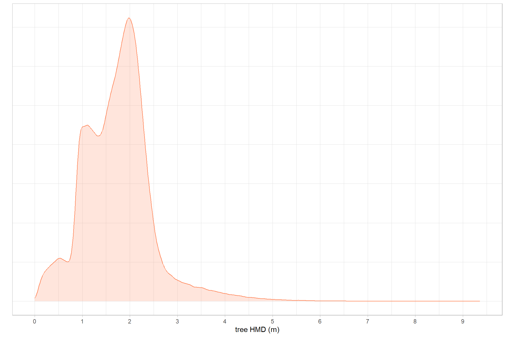
Let’s look at the distribution of HMD in our study area
trees_hmd_ans %>%
ggplot2::ggplot(mapping = ggplot2::aes(x = max_crown_diam_height_m)) +
ggplot2::geom_density(fill = "coral", color = "coral", alpha = 0.2) +
ggplot2::scale_x_continuous(breaks = scales::breaks_extended(11)) +
ggplot2::labs(x = "tree HMD (m)", y = "") +
ggplot2::theme_light() +
ggplot2::theme(axis.text.y = ggplot2::element_blank(), axis.ticks.y = ggplot2::element_blank())
and look at the summary statistics of HMD
## Min. 1st Qu. Median Mean 3rd Qu. Max.
## 0.000 1.259 1.766 1.752 2.127 9.3602.8 Forest Type: trees_type()
We’ll now use trees_type() to attach species information using USDA Forest Inventory and Analysis (FIA) codes. FIA Forest Type Group Code is attached to each tree in the tree list based on the spatial overlap with the Forest Type Groups of the Continental United States data (Wilson 2023).
let’s get the FIA forest type group for our tree list
# where should we save the file?
type_fnm <- file.path(c2t_process_dir, "type_data.csv")
type_rast_fnm <- file.path(c2t_process_dir, "type_rast.tif")
# if we don't already have the data, run it
if(!file.exists(type_fnm) || !file.exists(type_rast_fnm)){
# time it
st_temp <- Sys.time()
# run it
trees_type_ans <- cloud2trees::trees_type(
tree_list = treetops_sf
, study_boundary =
sf::st_read(file.path(c2t_process_dir, "raw_las_ctg_info.gpkg")) %>%
sf::st_union()
)
# timer
mins_temp <- difftime(Sys.time(),st_temp,units = "mins") %>% as.numeric()
# save type
trees_type_ans$tree_list %>%
sf::st_drop_geometry() %>%
write.csv(file = type_fnm, row.names = F, append = F)
# save raster
trees_type_ans$foresttype_rast %>% terra::writeRaster(type_rast_fnm, overwrite=T)
# save tracking
readr::read_csv(c2t_tracking_fnm, progress = F, show_col_types = F) %>%
dplyr::mutate(
timer_trees_type_mins = mins_temp
) %>%
write.csv(
file = c2t_tracking_fnm
, row.names = F, append = F
)
}else{
trees_type_ans <- list()
# type data
trees_type_ans$tree_list <- readr::read_csv(type_fnm, progress = F, show_col_types = F)
# raster
trees_type_ans$foresttype_rast <- terra::rast(type_rast_fnm)
}Let’s look at the FIA Forest Type Group data we extracted for the tree list.
trees_type_ans$tree_list %>%
sf::st_drop_geometry() %>%
dplyr::count(forest_type_group_code, forest_type_group) %>%
dplyr::arrange(desc(n)) %>%
dplyr::mutate(pct = n/sum(n)) %>%
kableExtra::kbl(caption = "Count of trees by FIA Forest Type Group", digits = 2) %>%
kableExtra::kable_styling()| forest_type_group_code | forest_type_group | n | pct |
|---|---|---|---|
| 180 | Pinyon / juniper group | 605364 | 0.97 |
| 220 | Ponderosa pine group | 19879 | 0.03 |
| 970 | Woodland hardwoods group | 135 | 0.00 |
Let’s attach FIA Forest Types Group name to the raster (foresttype_rast) of the area we searched and plot it
# load in the forest type data
ext_data_temp <- cloud2trees::find_ext_data()
foresttype_lookup <- file.path(ext_data_temp$foresttype_dir, "foresttype_lookup.csv") %>%
readr::read_csv(progress = F, show_col_types = F) %>%
dplyr::distinct(forest_type_group_code, forest_type_group, hardwood_softwood)
# what?
foresttype_lookup %>% dplyr::glimpse()## Rows: 35
## Columns: 3
## $ forest_type_group_code <dbl> 100, 120, 140, 150, 160, 170, 180, 200, 220, 24…
## $ forest_type_group <chr> "White / red / jack pine group", "Spruce / fir …
## $ hardwood_softwood <chr> "Softwood", "Softwood", "Softwood", "Softwood",…plot the FIA Forest Types Group raster within the footprint of the point cloud data we processed
# study area
aoi_temp <-
sf::st_read(file.path(c2t_process_dir, "raw_las_ctg_info.gpkg")) %>%
sf::st_transform(terra::crs(trees_type_ans$foresttype_rast))
# plot raster
r_plt <-
trees_type_ans$foresttype_rast %>%
terra::crop(aoi_temp %>% sf::st_buffer(5) %>% terra::vect()) %>%
terra::as.data.frame(xy=T) %>%
dplyr::rename(forest_type_group_code = 3) %>%
dplyr::left_join(foresttype_lookup, by = "forest_type_group_code") %>%
ggplot2::ggplot() +
ggplot2::geom_tile(mapping = ggplot2::aes(x=x, y=y, fill = forest_type_group)) +
ggplot2::labs(fill = "FIA forest\ntype group") +
# ggplot2::scale_fill_viridis_d(option = "turbo", alpha = 0.9) +
harrypotter::scale_fill_hp_d(option = "lunalovegood", alpha = 0.9) +
ggplot2::theme_void() +
ggplot2::theme(legend.position = "top") +
ggplot2::guides(fill = ggplot2::guide_legend(nrow = 2, byrow = T))
# add our study boundary
r_plt +
ggplot2::geom_sf(data = aoi_temp, color = "white", fill = NA)
2.9 Combine data
before our last tree component calculation, we’ll bring all of our data together because the last component relies on this data
# read all of our data back in
trees_dbh_temp <-
readr::read_csv(
dbh_fnm
, col_select = c(
treeID, tidyselect::contains("dbh")
, tidyselect::starts_with("basal_area")
, tidyselect::starts_with("radius")
)
, show_col_types = F
, progress = F
)
trees_cbh_temp <-
readr::read_csv(
cbh_fnm
, col_select = c(treeID, tree_cbh_m, is_training_cbh)
, show_col_types = F
, progress = F
)
trees_hmd_temp <-
readr::read_csv(
hmd_fnm
, col_select = c(treeID, max_crown_diam_height_m, is_training_hmd)
, show_col_types = F
, progress = F
)
trees_type_temp <-
readr::read_csv(
type_fnm
, col_select = c(treeID, tidyselect::starts_with("forest_type"), hardwood_softwood)
, show_col_types = F
, progress = F
)
# function re-cast treeID if needed
recast_id_fn <- function(df, cl) {
if(
!inherits(
df$treeID
, cl
)
){
if(cl=="character"){
df$treeID <- format(df$treeID, scientific = F, trim = T) %>%
as.character() %>%
stringr::str_squish()
}else if(cl=="numeric"){
df$treeID <- as.numeric(df$treeID)
}
}
return(df)
}
# apply
trees_dbh_temp <- trees_dbh_temp %>%
recast_id_fn(cl = class(treetops_sf$treeID))
trees_cbh_temp <- trees_cbh_temp %>%
recast_id_fn(cl = class(treetops_sf$treeID))
trees_hmd_temp <- trees_hmd_temp %>%
recast_id_fn(cl = class(treetops_sf$treeID))
trees_type_temp <- trees_type_temp %>%
recast_id_fn(cl = class(treetops_sf$treeID))
# now we'll get a list of the columns in our component data to drop from our main data
cols_to_drop_temp <- c(
names(trees_dbh_temp), names(trees_cbh_temp)
, names(trees_hmd_temp), names(trees_type_temp)
) %>%
unique() %>%
setdiff("treeID")
# remove cols from our primary data
treetops_sf <- treetops_sf %>%
dplyr::select( -dplyr::any_of(cols_to_drop_temp))
# join altogether using the magical purrr::reduce
treetops_sf <-
list(
treetops_sf, trees_dbh_temp, trees_cbh_temp
, trees_hmd_temp, trees_type_temp
) %>%
purrr::reduce(\(x,y) dplyr::left_join(x, y, by = "treeID"))let’s glimpse our almost final data
## Rows: 625,378
## Columns: 23
## $ treeID <chr> "270511_706700.2_4193508", "273702_706701.7_41…
## $ tree_height_m <dbl> 1.88, 4.37, 2.00, 6.13, 3.21, 4.08, 4.67, 5.79…
## $ tree_x <dbl> 706700.2, 706701.7, 706702.2, 706702.4, 706703…
## $ tree_y <dbl> 4193508, 4193500, 4193498, 4193502, 4193468, 4…
## $ crown_area_m2 <dbl> 0.5000, 4.6250, 1.1250, 5.7500, 1.5625, 2.8750…
## $ fia_est_dbh_cm <dbl> 7.301241, 25.495789, 8.026274, 34.120251, 17.0…
## $ fia_est_dbh_cm_lower <dbl> 3.237763, 11.244682, 3.579261, 15.115603, 7.47…
## $ fia_est_dbh_cm_upper <dbl> 13.69907, 47.82657, 14.77090, 63.38588, 31.738…
## $ dbh_cm <dbl> 7.301241, 25.495789, 8.026274, 34.120251, 17.0…
## $ dbh_m <dbl> 0.07301241, 0.25495789, 0.08026274, 0.34120251…
## $ ptcld_extracted_dbh_cm <lgl> NA, NA, NA, NA, NA, NA, NA, NA, NA, NA, NA, NA…
## $ ptcld_predicted_dbh_cm <lgl> NA, NA, NA, NA, NA, NA, NA, NA, NA, NA, NA, NA…
## $ basal_area_m2 <dbl> 0.004186810, 0.051053648, 0.005059619, 0.09143…
## $ basal_area_ft2 <dbl> 0.04506683, 0.54954146, 0.05446174, 0.98421050…
## $ radius_m <dbl> 0.03650621, 0.12747894, 0.04013137, 0.17060125…
## $ tree_cbh_m <dbl> 1.667434, 2.422139, 1.701111, 3.307433, 2.1237…
## $ is_training_cbh <lgl> FALSE, FALSE, FALSE, FALSE, FALSE, FALSE, FALS…
## $ max_crown_diam_height_m <dbl> 1.030000, 2.256222, 1.106201, 2.120000, 1.4513…
## $ is_training_hmd <lgl> TRUE, FALSE, FALSE, TRUE, FALSE, TRUE, FALSE, …
## $ forest_type_group_code <dbl> 180, 180, 180, 180, 180, 180, 180, 180, 180, 1…
## $ forest_type_group <chr> "Pinyon / juniper group", "Pinyon / juniper gr…
## $ hardwood_softwood <chr> "Softwood", "Softwood", "Softwood", "Softwood"…
## $ geometry <POINT [m]> POINT (706700.2 4193508), POINT (706701.…2.10 Crown Biomass: trees_biomass()
Lastly, we’ll use trees_biomass() to estimate tree crown biomass in kilograms. We’ll estimate biomass based on: 1) LANDFIRE’s Forest Canopy Bulk Density (CBD) data; and 2) based on the Cruz et al. (2003) equations and the FIA forest type group we got above
# where should we save the file?
biomass_fnm <- file.path(c2t_process_dir,"biomass_data.csv")
# if we don't already have the data, run it
if(!file.exists(biomass_fnm)){
# time it
st_temp <- Sys.time()
# run it
trees_biomass_ans <- cloud2trees::trees_biomass(
tree_list = treetops_sf
, method = c("cruz","landfire")
, study_boundary =
sf::st_read(file.path(c2t_process_dir,"raw_las_ctg_info.gpkg")) %>%
sf::st_union()
)
# timer
mins_temp <- difftime(Sys.time(),st_temp,units = "mins") %>% as.numeric()
# save biomass
trees_biomass_ans$tree_list %>%
sf::st_drop_geometry() %>%
write.csv(file = biomass_fnm, row.names = F, append = F)
# save raster df
trees_biomass_ans$stand_cell_data_landfire %>%
sf::st_drop_geometry() %>%
write.csv(file = file.path(c2t_process_dir,"stand_cell_data_landfire.csv"), row.names = F, append = F)
trees_biomass_ans$stand_cell_data_cruz %>%
sf::st_drop_geometry() %>%
write.csv(file = file.path(c2t_process_dir,"stand_cell_data_cruz.csv"), row.names = F, append = F)
# save tracking
readr::read_csv(c2t_tracking_fnm, progress = F, show_col_types = F) %>%
dplyr::mutate(
timer_trees_biomass_mins = mins_temp
) %>%
write.csv(
file = c2t_tracking_fnm
, row.names = F, append = F
)
}else{
trees_biomass_ans <- list()
# biomass data
trees_biomass_ans$tree_list <- readr::read_csv(biomass_fnm, progress = F, show_col_types = F)
# raster
trees_biomass_ans$stand_cell_data_landfire <-
readr::read_csv(file = file.path(c2t_process_dir,"stand_cell_data_landfire.csv"), progress = F, show_col_types = F)
trees_biomass_ans$stand_cell_data_cruz <-
readr::read_csv(file = file.path(c2t_process_dir,"stand_cell_data_cruz.csv"), progress = F, show_col_types = F)
}Tree crown biomass estimation took a total of 5.2 minutes at processing rate of 0.35 seconds per hectare
let’s look at the summary of the tree crown bulk density (CBD) values and the resulting crown biomass
trees_biomass_ans$tree_list %>%
sf::st_drop_geometry() %>%
dplyr::select(tidyselect::ends_with("tree_kg_per_m3"), tidyselect::ends_with("crown_biomass_kg")) %>%
summary()## cruz_tree_kg_per_m3 landfire_tree_kg_per_m3 cruz_crown_biomass_kg
## Min. :0.4 Min. :0.09936 Min. : 0.0
## 1st Qu.:0.9 1st Qu.:0.53931 1st Qu.: 1.4
## Median :1.0 Median :0.70857 Median : 4.4
## Mean :1.0 Mean :0.75114 Mean : 8.7
## 3rd Qu.:1.2 3rd Qu.:0.89114 3rd Qu.: 11.4
## Max. :2.0 Max. :1.99737 Max. :435.6
## NA's :605499 NA's :605499
## landfire_crown_biomass_kg
## Min. : 0.0013
## 1st Qu.: 0.8059
## Median : 2.5805
## Mean : 5.6171
## 3rd Qu.: 6.6420
## Max. :793.2737
## note those NA values for the Cruz et al. (2003) method, these NA values are introduced because this particular methodology is limited to the forest types for which biomass equations exist
check out the break-down by FIA forest type group
trees_biomass_ans$tree_list %>%
sf::st_drop_geometry() %>%
dplyr::filter(!is.na(forest_type_group)) %>%
dplyr::group_by(forest_type_group) %>%
dplyr::summarise(
n = dplyr::n()
, dplyr::across(
cruz_tree_kg_per_m3
, .fns = list(mean = mean, sd = sd, min = min, max = max)
)
) %>%
dplyr::rename_with(~ stringr::str_remove_all(.x,"cruz_tree_kg_per_m3_")) %>%
dplyr::arrange(desc(n)) %>%
kableExtra::kbl(caption = "Summary of tree CBD (kg per m3) by FIA Forest Type Group", digits = 2) %>%
kableExtra::kable_styling() | forest_type_group | n | mean | sd | min | max |
|---|---|---|---|---|---|
| Pinyon / juniper group | 605364 | NA | NA | NA | NA |
| Ponderosa pine group | 19879 | 1.04 | 0.27 | 0.36 | 1.99 |
| Woodland hardwoods group | 135 | NA | NA | NA | NA |
Let’s check the distribution of CBD values estimated in our study area but only for trees that had both Cruz et al. (2003) and LANDFIRE estimates
trees_biomass_ans$tree_list %>%
sf::st_drop_geometry() %>%
dplyr::select(tidyselect::ends_with("tree_kg_per_m3")) %>%
dplyr::filter(!dplyr::if_any(.cols = dplyr::everything(), .fns = ~is.na(.x))) %>%
tidyr::pivot_longer(cols = tidyselect::everything()) %>%
dplyr::mutate(name = stringr::str_remove_all(name,"_tree_kg_per_m3")) %>%
ggplot2::ggplot(ggplot2::aes(x = value, color = name, fill = name)) +
ggplot2::geom_density() +
ggplot2::facet_grid(cols = dplyr::vars(name)) +
ggplot2::scale_fill_viridis_d(option = "turbo", begin = 0.3, end = 0.7, alpha = 0.7, name = "biomass method") +
ggplot2::scale_color_viridis_d(option = "turbo", begin = 0.3, end = 0.7,name = "biomass method") +
ggplot2::scale_x_continuous(breaks = scales::breaks_extended(8)) +
ggplot2::labs(x = "tree kilograms per cubic meter", y = "") +
ggplot2::theme_light() +
ggplot2::theme(legend.position = "none")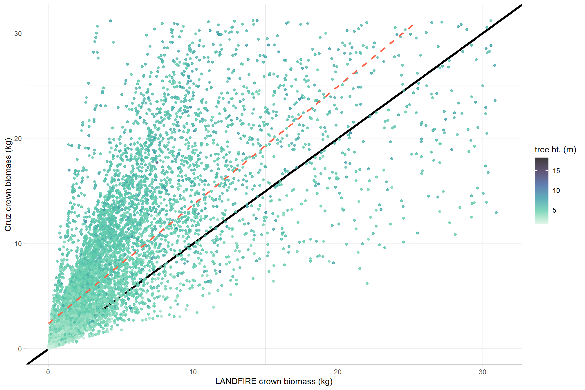
We can see how the LANDFIRE Forest Canopy Bulk Density (CBD) data and Cruz et al. (2003) methodologies compare at estimating tree crown biomass for our study area
we’ll make this comparison only for trees that have biomass estimated using the Cruz method as well
# set the upper limit scale
ul_temp <- max(
quantile(trees_biomass_ans$tree_list$cruz_crown_biomass_kg, probs = 0.95, na.rm = T)
, quantile(trees_biomass_ans$tree_list$landfire_crown_biomass_kg, probs = 0.95, na.rm = T)
)
# plot tree landfire vs. cruz crown biomass estimate
trees_biomass_ans$tree_list %>%
sf::st_drop_geometry() %>%
dplyr::filter(!is.na(cruz_crown_biomass_kg)) %>%
dplyr::slice_sample(n=11111) %>%
ggplot2::ggplot(
mapping = ggplot2::aes(
x = landfire_crown_biomass_kg, y = cruz_crown_biomass_kg
)
) +
ggplot2::geom_abline(lwd = 1.5) +
ggplot2::geom_point(ggplot2::aes(color = tree_height_m)) +
ggplot2::geom_smooth(method = "lm", se=F, color = "tomato", linetype = "dashed") +
ggplot2::scale_color_viridis_c(option = "mako", direction = -1, alpha = 0.8) +
ggplot2::scale_x_continuous(limits = c(0, ul_temp)) +
ggplot2::scale_y_continuous(limits = c(0, ul_temp)) +
ggplot2::labs(
x = "LANDFIRE crown biomass (kg)"
, y = "Cruz crown biomass (kg)"
, color = "tree ht. (m)"
) +
ggplot2::theme_light()
we can summarize the average difference between the two methods for records with both estimates
trees_biomass_ans$tree_list %>%
sf::st_drop_geometry() %>%
dplyr::filter(!is.na(cruz_crown_biomass_kg)) %>%
dplyr::mutate(
diff_cruz_lf_kg = cruz_crown_biomass_kg-landfire_crown_biomass_kg
, pct_diff_cruz_lf_kg = diff_cruz_lf_kg/landfire_crown_biomass_kg
) %>%
dplyr::summarise(
dplyr::across(
c(cruz_crown_biomass_kg,landfire_crown_biomass_kg,diff_cruz_lf_kg,pct_diff_cruz_lf_kg)
, .fns = list(mean = mean)
, .names = "{.fn}_{.col}"
)
) %>%
dplyr::mutate(
mean_pct_diff_cruz_lf_kg = scales::percent(mean_pct_diff_cruz_lf_kg, accuracy = 0.1)
, dplyr::across(
.cols = -mean_pct_diff_cruz_lf_kg
, .fns = ~scales::comma(.x,accuracy = 0.01)
)
) %>%
tidyr::pivot_longer(tidyselect::everything()) %>%
kableExtra::kbl(caption = "Mean difference between LANDFIRE and Cruz estimated tree crown biomass in kilograms", digits = 2) %>%
kableExtra::kable_styling() | name | value |
|---|---|
| mean_cruz_crown_biomass_kg | 8.65 |
| mean_landfire_crown_biomass_kg | 5.22 |
| mean_diff_cruz_lf_kg | 3.43 |
| mean_pct_diff_cruz_lf_kg | 130.9% |
Finally, let’s plot the spatial arrangement of estimated biomass using the raster data returned from trees_biomass()
First, for LANDFIRE
## Reading layer `raw_las_ctg_info' from data source
## `C:\Data\usfs\blm_trfo_uas\data\point_cloud_processing_delivery\raw_las_ctg_info.gpkg'
## using driver `GPKG'
## Simple feature collection with 156 features and 34 fields
## Geometry type: POLYGON
## Dimension: XY
## Bounding box: xmin: 706698.8 ymin: 4191874 xmax: 710919.1 ymax: 4194616
## Projected CRS: NAD83(2011) / UTM zone 12N# get the projection for the stand cell data
epsg_code_temp <- trees_biomass_ans$stand_cell_data_landfire$rast_epsg_code[1] %>% as.numeric()
# set the color limit
ul_temp <- max(
max(trees_biomass_ans$stand_cell_data_landfire$landfire_stand_kg_per_m3, na.rm = T)
, max(trees_biomass_ans$stand_cell_data_cruz$cruz_stand_kg_per_m3, na.rm = T)
)
# plot the stand cell data with trees overlaid
trees_biomass_ans$stand_cell_data_landfire %>%
dplyr::filter(trees>0) %>%
ggplot2::ggplot() +
ggplot2::geom_tile(ggplot2::aes(x=x,y=y,fill = landfire_stand_kg_per_m3), color = NA) +
ggplot2::geom_sf(data = aoi_temp %>% sf::st_transform(crs = epsg_code_temp), fill = NA) +
ggplot2::labs(subtitle = "LANDFIRE stand kg/m3", fill="LANDFIRE\nstand kg/m3") +
ggplot2::scale_fill_viridis_c(
limits = c(NA,ul_temp)
, option = "rocket", direction = -1, na.value = "white"
) +
ggplot2::coord_sf() +
ggplot2::theme_void()
and for Cruz
# get the projection for the stand cell data
epsg_code_temp <- trees_biomass_ans$stand_cell_data_cruz$rast_epsg_code[1] %>% as.numeric()
# plot the stand cell data with trees overlaid
trees_biomass_ans$stand_cell_data_cruz %>%
dplyr::filter(trees>0) %>%
ggplot2::ggplot() +
ggplot2::geom_tile(ggplot2::aes(x=x,y=y,fill = cruz_stand_kg_per_m3), color = NA) +
ggplot2::geom_sf(data = aoi_temp %>% sf::st_transform(crs = epsg_code_temp), fill = NA) +
ggplot2::labs(subtitle = "Cruz stand kg/m3", fill="Cruz\nstand kg/m3") +
ggplot2::scale_fill_viridis_c(
limits = c(NA,ul_temp)
, option = "rocket", direction = -1, na.value = "white"
) +
ggplot2::theme_void()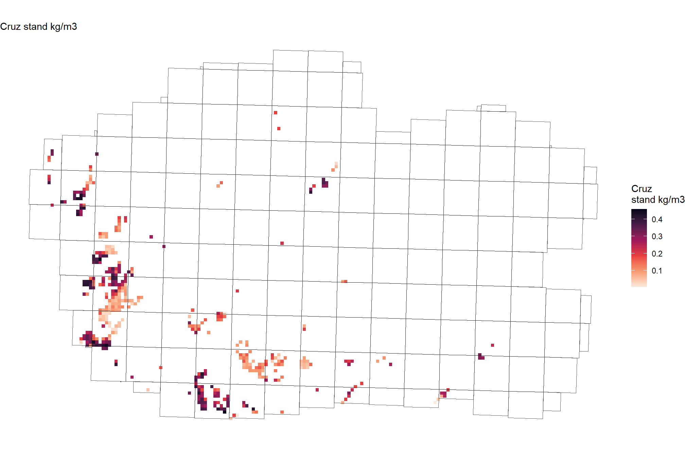
2.11 Processing Time Summary
Let’s summarize how long all of this point cloud processing took and determine which steps were most computationally intensive.
# aggregate the total processing time
processing_data <-
readr::read_csv(c2t_tracking_fnm, progress = F, show_col_types = F) %>%
dplyr::mutate(
timer_total_time_mins = timer_cloud2raster_mins + timer_raster2trees_mins +
timer_trees_dbh_mins + timer_trees_cbh_mins + timer_trees_type_mins +
timer_trees_hmd_mins + timer_trees_biomass_mins
, timer_tree_extraction_mins = timer_cloud2raster_mins + timer_raster2trees_mins
) %>%
dplyr::mutate(dplyr::across(
.cols = c(timer_tree_extraction_mins,
timer_trees_dbh_mins, timer_trees_cbh_mins, timer_trees_type_mins,
timer_trees_hmd_mins, timer_trees_biomass_mins)
, .fns = ~ .x/timer_total_time_mins
, .names = "{.col}_pct"
))
# table it
table_temp <- processing_data %>%
dplyr::select(
c(timer_tree_extraction_mins,
timer_trees_dbh_mins, timer_trees_cbh_mins, timer_trees_type_mins,
timer_trees_hmd_mins, timer_trees_biomass_mins
, c(tidyselect::ends_with("_pct") & tidyselect::starts_with("timer_"))
)
) %>%
tidyr::pivot_longer(dplyr::everything()) %>%
dplyr::mutate(
units = stringr::word(name, -1, sep = "_")
, section = name %>%
stringr::str_remove_all("timer_") %>%
stringr::str_remove_all("_mins") %>%
stringr::str_remove_all("_pct")
) %>%
dplyr::select(-name) %>%
tidyr::pivot_wider(names_from = units, values_from = value) %>%
dplyr::mutate(
mins_lab = scales::comma(mins,accuracy = 0.1)
, pct_lab = scales::percent(pct,accuracy = 0.1)
)table it
table_temp %>%
dplyr::select(section, tidyselect::ends_with("_lab")) %>%
kableExtra::kbl(
caption = "Point cloud processing section run time"
, col.names = c(
"Processing section"
, "time (minutes)"
, "% of total time"
)
) %>%
kableExtra::kable_styling()| Processing section | time (minutes) | % of total time |
|---|---|---|
| tree_extraction | 340.6 | 38.8% |
| trees_dbh | 7.9 | 0.9% |
| trees_cbh | 319.6 | 36.4% |
| trees_type | 0.4 | 0.0% |
| trees_hmd | 203.5 | 23.2% |
| trees_biomass | 5.2 | 0.6% |
2.12 Data Export
Now that we have our point cloud-extracted tree list with all of the tree component measurements attached, let’s save the data for use in our analysis
first we’ll attach the biomass metrics to our spatial tree list
# new columns added by trees_biomass()
names_temp <-
setdiff(
trees_biomass_ans$tree_list %>% names()
, treetops_sf %>%
dplyr::select(!tidyselect::starts_with("cruz_")) %>%
dplyr::select(!tidyselect::starts_with("landfire_")) %>%
dplyr::select( -dplyr::any_of(c(
"crown_dia_m","crown_length_m","crown_volume_m3"
))) %>%
names()
)
# recast id if needed
trees_biomass_ans$tree_list <-
trees_biomass_ans$tree_list %>%
recast_id_fn(cl = class(treetops_sf$treeID))
# attach to our spatial tree points
treetops_sf <-
treetops_sf %>%
dplyr::select(!tidyselect::starts_with("cruz_")) %>%
dplyr::select(!tidyselect::starts_with("landfire_")) %>%
dplyr::select( -dplyr::any_of(c(
"crown_dia_m","crown_length_m","crown_volume_m3"
))) %>%
dplyr::left_join(
trees_biomass_ans$tree_list %>%
sf::st_drop_geometry() %>%
dplyr::select(dplyr::all_of(c("treeID", names_temp)))
, by = "treeID"
)
# what does our final data look like?
treetops_sf %>% dplyr::glimpse()## Rows: 625,378
## Columns: 34
## $ treeID <chr> "270511_706700.2_4193508", "273702_706701.7_…
## $ tree_height_m <dbl> 1.88, 4.37, 2.00, 6.13, 3.21, 4.08, 4.67, 5.…
## $ tree_x <dbl> 706700.2, 706701.7, 706702.2, 706702.4, 7067…
## $ tree_y <dbl> 4193508, 4193500, 4193498, 4193502, 4193468,…
## $ crown_area_m2 <dbl> 0.5000, 4.6250, 1.1250, 5.7500, 1.5625, 2.87…
## $ fia_est_dbh_cm <dbl> 7.301241, 25.495789, 8.026274, 34.120251, 17…
## $ fia_est_dbh_cm_lower <dbl> 3.237763, 11.244682, 3.579261, 15.115603, 7.…
## $ fia_est_dbh_cm_upper <dbl> 13.69907, 47.82657, 14.77090, 63.38588, 31.7…
## $ dbh_cm <dbl> 7.301241, 25.495789, 8.026274, 34.120251, 17…
## $ dbh_m <dbl> 0.07301241, 0.25495789, 0.08026274, 0.341202…
## $ ptcld_extracted_dbh_cm <lgl> NA, NA, NA, NA, NA, NA, NA, NA, NA, NA, NA, …
## $ ptcld_predicted_dbh_cm <lgl> NA, NA, NA, NA, NA, NA, NA, NA, NA, NA, NA, …
## $ basal_area_m2 <dbl> 0.004186810, 0.051053648, 0.005059619, 0.091…
## $ basal_area_ft2 <dbl> 0.04506683, 0.54954146, 0.05446174, 0.984210…
## $ radius_m <dbl> 0.03650621, 0.12747894, 0.04013137, 0.170601…
## $ tree_cbh_m <dbl> 1.667434, 2.422139, 1.701111, 3.307433, 2.12…
## $ is_training_cbh <lgl> FALSE, FALSE, FALSE, FALSE, FALSE, FALSE, FA…
## $ max_crown_diam_height_m <dbl> 1.030000, 2.256222, 1.106201, 2.120000, 1.45…
## $ is_training_hmd <lgl> TRUE, FALSE, FALSE, TRUE, FALSE, TRUE, FALSE…
## $ forest_type_group_code <dbl> 180, 180, 180, 180, 180, 180, 180, 180, 180,…
## $ forest_type_group <chr> "Pinyon / juniper group", "Pinyon / juniper …
## $ hardwood_softwood <chr> "Softwood", "Softwood", "Softwood", "Softwoo…
## $ cruz_stand_id <dbl> 8933, 9119, 9119, 9119, 9305, 9305, 9119, 91…
## $ cruz_tree_kg_per_m3 <dbl> NA, NA, NA, NA, NA, NA, NA, NA, NA, NA, NA, …
## $ cruz_stand_kg_per_m3 <dbl> NA, NA, NA, NA, NA, NA, NA, NA, NA, NA, NA, …
## $ cruz_crown_biomass_kg <dbl> NA, NA, NA, NA, NA, NA, NA, NA, NA, NA, NA, …
## $ landfire_stand_id <dbl> 4594, 4594, 4594, 4594, 4742, 4742, 4594, 45…
## $ crown_dia_m <dbl> 0.7978846, 2.4266712, 1.1968268, 2.7057582, …
## $ crown_length_m <dbl> 0.2125661, 1.9478610, 0.2988889, 2.8225668, …
## $ crown_volume_m3 <dbl> 0.07085537, 6.00590471, 0.22416667, 10.81983…
## $ landfire_tree_kg_per_m3 <dbl> 0.7581083, 0.7581083, 0.7581083, 0.7581083, …
## $ landfire_stand_kg_per_m3 <dbl> 0.27, 0.27, 0.27, 0.27, 0.27, 0.27, 0.27, 0.…
## $ landfire_crown_biomass_kg <dbl> 0.05371604, 4.55312599, 0.16994260, 8.202609…
## $ geometry <POINT [m]> POINT (706700.2 4193508), POINT (70670…